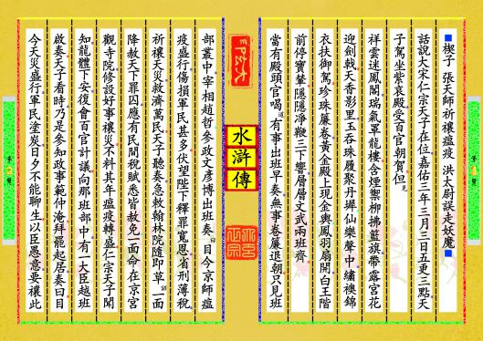
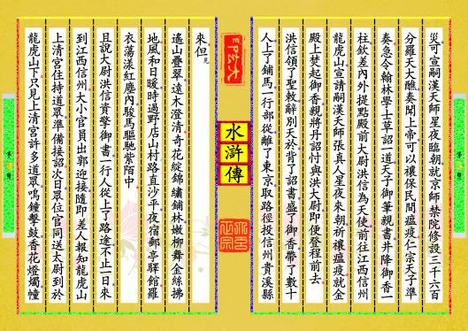
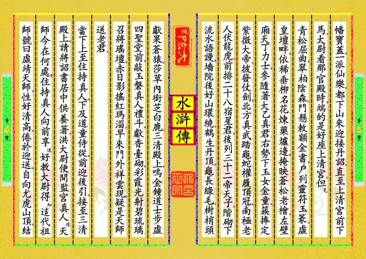
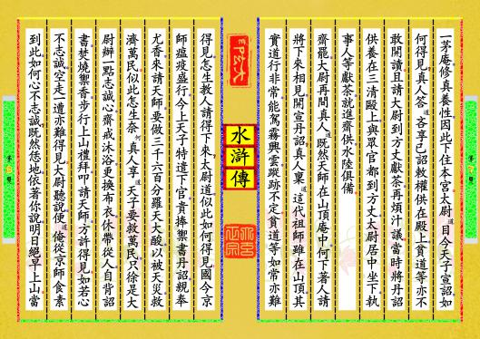
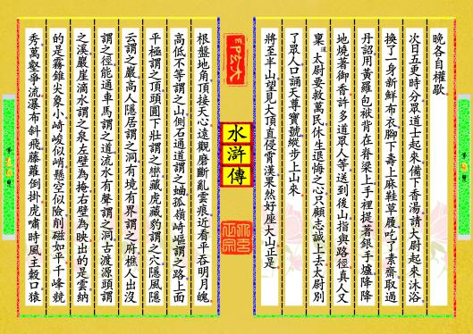

-
第【1-2】页 ⬛楔子▂張天師祈禳瘟疫▂洪太尉誤走妖魔⬛話說大宋仁宗天子在位，嘉佑三年三月三日五更三點，天子駕坐紫哀殿，受百官朝賀。但見，祥雲迷鳳閣，瑞氣罩龍樓。含煙禦柳拂籃旗，帶露宮花迎劍戟。天香影里，玉吞珠履聚丹墀；仙樂聲中，繡襖錦衣扶御駕。珍珠簾卷，黃金殿上現金輿；鳳羽扇開，白王階前停寶輦。隱隱凈鞭三下響，層層文武兩班齊。當有殿頭官喝道，有事出班早奏，無事卷簾退朝。只見班部叢中，宰相趙哲、參政文彥博出班奏曰，目今京師瘟疫盛行，傷損軍民甚多。伏望陛下釋罪寬恩，省刑薄稅，祈禳天災，救濟萬民。天子聽奏，急敕翰林院隨即草詔，一面降赦天下罪囚，應有民間稅賦悉皆赦免；一面命在京宮觀寺院，修設好事禳災。不料其年瘟疫轉盛。仁宗天子聞知，龍體下安，復會百官計議。向那班部中，有一大臣越班啟奏。天子看時，乃是參知政事範仲淹。拜罷起居，奏曰。目今天災盛行，軍民塗炭，日夕不能聊生。以臣愚意，要禳此预览书籍 全文配置
-
第【3-4】页 災，可宣嗣漢天師星夜臨朝，就京師禁院修設三千六百分羅天大醮，奏聞上帝，可以禳保民間瘟疫。仁宗天子準奏。急令翰林學士草詔一道，天子御筆親書，井降御香一柱，欽差內外提點殿前大尉洪信為天使，前往江西信州龍虎山，宣請嗣漢夭師張真人星夜來朝，祈禳瘟疫。就金殿上焚起御香，親將丹詔忖與洪大尉，即便登程前去。洪信領了聖敕，辭別天於，背了詔書，盛了御香，帶了數十人，上了鋪馬，一行部從，離了東京，取路徑投信州貴溪縣來。但見，遙山疊翠，遠木澄清。奇花綻錦繡鋪林，嫩柳舞金絲拂地。風和日暖，時過野店山村；路直沙平，夜宿郵亭驛館。羅衣蕩漾紅塵內，駿馬驅馳紫陌中。且說大尉洪信資擎御書，一行人從上了路途，不止一日，來到江西信州。大小官員出郭迎接，隨即差人報知龍虎山上清宮住持道眾，準備接詔。次日，眾位官同送太尉到於龍虎山下。只見上清宮許多道眾，鳴鐘擊鼓，香花燈燭，幢预览书籍 全文配置
-
第【5-6】页 幡寶蓋，一派仙樂，都下山來迎接丹詔，直至上清宮前下馬。太尉看那官殿時，端的是好座上清宮。但見，青松屈曲，翠柏陰森。門懸敕額金書，戶列靈符玉篆。虛皇壇畔，依稀垂柳名花；煉藥爐邊，掩映蒼松老檜。左壁廂天丁力士，參隨著大乙真君；右勢下玉女金童，簇捧定紫微大帝。披發仗劍，北方真武踏龜蛇；權履頂冠，南極老人伏龍虎。前排二十八宿星君，後列三十二帝天子。階砌下流水語謾，墻院後好山環繞。鶴生丹頂，龜長綠毛。樹梢頭獻果蒼猿，莎草內銜芝白鹿。三清殿上，嗚金鐘道士步虛；四聖堂前，敲玉磐真人禮斗，獻香臺砌，彩霞光射碧琉璃；召將瑤壇，赤日影搖紅瑪淄。早來門外祥雲現，疑是天師送老君。當下上至住持真人，下及道童侍從，前迎後引，接至三清殿上，請將詔書居中供養著。洪大尉便間監宮真人道，天師今在何處？住持真人向前享道，好教大尉得知，這代祖師號曰虛靖天師，性好清高，倦於迎送，自向尤虎山頂，結预览书籍 全文配置
-
第【7-8】页 一茅庵，修真養性，因此下住本宮。太尉道，目今天子宣詔，如何得見？真人答道，吝享已詔敕權供在殿上，貧道等亦不敢開讀。且請大尉到方丈獻茶，再煩汁議。當時將丹詔供養在三清毆上，與眾官都到方丈，太尉居中坐下，執事人等獻茶，就進齋供，水陸俱備。齋罷，大尉再間真人道，既然天師在山頂庵中，何下著人請將下來相見，開宣丹詔？真人稟道，這代祖師雖在山頂，其實道行非常，能駕霧興雲，蹤跡不定。貧道等如常亦難得見，怎生教人請得下來？太尉道，似此如何得見！國今京師瘟疫盛行，今上天子特遣下官，貴捧禦書丹詔，親奉尤香，來請天師，要做三千六百分羅天大酸，以被天災，救濟萬民。似此怎生奈何，真人享道，天子要救萬民，只徐是大尉辦一點志誠心，齋戒沐浴，更換布衣，休帶從人，自背詔書，焚燒禦香，步行上山禮拜，叩請天師，方許得見。如若心不志誠，空走一遭亦難得見。大尉聽說，便道，俺從京師食素到此，如何心不志誠？既然恁地，依著你說，明日絕早上山。當预览书籍 全文配置
-
第【9-10】页 晚各自權歇。次日五更時分，眾道士起來，備下香湯，請大尉起來沐浴，換了一身新鮮布衣，腳下壽上麻鞋草履，吃了素齋，取過丹詔，用黃羅包袱背在脊梁上，手裡提著銀手爐，降降地燒著御香。許多道眾人等，送到後山，指與路徑。真人又稟道，太尉要救萬民，休生退悔之心，只顧志誠上去。太尉別了眾人，口誦天尊寶號，縱步上山來。將至半山，望見大頂直侵霄漢，果然好座大山。正是。根盤地角，頂接天心。遠觀磨斷亂雲痕，近看平吞明月魄。高低不等謂之山，側石通道謂之蛐，孤嶺崎嶇謂之路，上面平極謂之頂，頭圓下壯謂之巒，藏虎藏豹謂之穴，隱風隱云謂之巖，高人隱居謂之洞，有境有界謂之府，樵人出沒謂之徑，能通車馬謂之道，流水有聲謂之洞，古渡源頭謂之溪，巖崖滴水謂之泉左壁為掩，右壁為映。出的是雲，納的是霧錐尖象小，崎峻似峭，懸空似險，削磁如平。千峰競秀，萬壑爭流。瀑布斜飛，藤蘿倒掛。虎嘯時風主穀口，猿预览书籍 全文配置